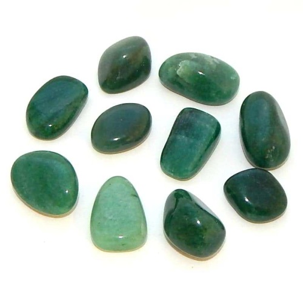

Green Aventurine Associations
- Candle Colour: Mint green, silver
- Chakra: Heart
- Element: Earth
- Flowers + Plants: Begonias and Gladioli
- Herbs/Incense/Oils: Bay, Parsley, Patchouli, Sagebrush
- Planet: Mercury
- Zodiac: Gemini
Green Aventurine Properties and Uses
- Animals: Use for pets who are clumsy
- Children: Helps to take more care with their school work and improve handwriting
- Health/Healing: Good for eye complaints and enchances mental perception. Can also be used to calm anxiety/panic attacks
- Love: Increases fertility
- Protection: Helps prevent DIY accidents. Can also protect your aura from psychic intrusion/draining, particularly by emotional vampires.
- Psychic: Induces psychic dreams and brings you the answers you're looking for. Increases clairvoyance, and can be used in conjunction with pendulum divination by holding it in your other hand
- The Stone Of: Gamblers
- Work: Will help you believe in your own abilities and increase opportunities you have to better yourself.
Credit